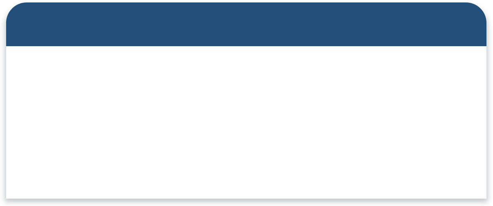

W-MEDICAL CENTER wirye
[ CLINIC SUBJECT ]
진료과목에 대해 안내드립니다.
건강검진센터
· 국민건강보험 공단 검진
· 5대 암검진
· 종합검진 | 채용검진 | 학생검진 | 웨딩검진
내시경센터
· 위내시경
· 대장내시경
· 수면내시경
초음파센터
· 복부초음파 | 간초음파 | 갑상선초음파
· 심장초음파 | 경동맥초음파 | 유방촬영
· 골밀도검사 | X-ray촬영
위장질환클리닉
· 식도암 | 위암 | 대장암
· 역류성식도염 | 과민성대장증후군 | 염증성 대장질환
· 만성변비 & 만성설사
· 속쓰림 & 소화불량
· 헬리코박터 검사 및 제균치료
간·췌장클리닉
· 만성 B형간염 | 만성 C형간염 | 급성 A형간염
· 지방간 | 알코올성 간질환
· 간경변증 | 간암
· 급성 만성 췌장염 | 담석증
수액치료
· 직장인들의 피로회복을 위한 수액치료
· 수험생들의 집중력향상을 위한 수액치료
· 개인별 맞춤 수액 치료프로그램
· 비타민 주사
비만클리닉
· 위풍선삽입술(앤드볼시술) | 식이조절 및 운동처방
· 비만약물치료
금연클리닉
· 금연 보조 약물처방
· 흉부방사선 | 폐기능검사
W-MEDICAL CENTER wirye
[ CLINIC SPECIALIST ]
우리동네 의료진을 소개합니다.
SEOUL W - INTERNAL MEDICINE WIRYE
서울 W내과 위례점을 방문해주시는 모든분들께
만족할 수 있는 진료를 제공드릴것을 약속드립니다.
SEOUL W - INTERNAL MEDICINE WIRYE
서울 W내과 위례점을 방문해주시는 모든분들께
만족할 수 있는 진료를 제공드릴것을 약속드립니다.
- 
W-MEDICAL CENTER wirye
[ 건강검진센터 ]
우리나라 국민의 사망원인 3위에 해당하는
암, 심장 및 뇌혈관 질환을 조기 발견과
유해생활환경과
위험요인을 관리함으로써 질병을 예방하기 위함입니다.
공통항목 검진
문진 및 신체계측, 흉부방사선검사
혈액검사, 요검사, 구강검사, 시력, 청력
5대 암검진
채용검진
W-MEDICAL CENTER wirye
[ 내시경센터 ]
CO2 내시경 진행
인체에 해가 없는 CO2로
내시경을 진행하여 환자의 복부팽만감,
복통 등의 불편함은 줄이고 세밀한 검사로
더욱 정확한 진단을 합니다.
철저한 소독시스템
인체에 무해하고 살균효과가 뛰어난
내시경 전용 소독제를 사용하여
1:1로 소독을 시행합니다.
최첨단 대학급 장비
국내 대학병원에서 사용하는 상위버전의
내시경 장비를 이용하여 고해상도
Full HD 영상
촬영을 통해 정확한 병변
및 미세조직까지 확인할 수 있습니다.
안락한 개인회복실
내시경 시술이후 편안하게
쉬실 수 있는 개인
회복실에서 휴식을 취하실 수 있습니다.
W-MEDICAL CENTER wirye
[ 초음파센터 ]
인체에 무해한 음파를 몸 안에 투과시켜 나타나는
영상을
모니터로 관찰하여
이상유무를 알아내는 검사입니다.
방사선을 사용하지 않으므로 안전하고, 반복하여 검사하여도
통증이 없는 검사법입니다.
• 복부초음파
간, 담낭, 췌장, 비장, 신장 등 상복부 초음파 검사를 통해
구조적 이상이 있는지 확인합니다.
• 경동맥 초음파
초음파를 이용하여 혈류의 양과 경동맥의
협착정도를 측정합니다.
• 갑상선 초음파
갑상선 내부를 확인하여 물혹, 갑상선염,
양상/악성 종양등을 확인합니다.
W-MEDICAL CENTER wirye
[ 위장질환클리닉 ]
-
식도암 | 위암
대장암 -
역류성식도염
과민성대장증후군
염증성대장질환 -
만성변비
만성설사 -
속쓰림
소화불량 -
헬리코박터 검사
및 제균치료
W-MEDICAL CENTER wirye
[ 간·췌장질환클리닉 ]
-
만성 B형간염
만성 A형간염
만성 C형간염 -
지방간
알코올성 간질환 -
간경변증 | 간암
-
급성 만성 췌장염
담석증
W-MEDICAL CENTER wirye
[ 수액치료 ]
01
1:1 맞춤처방
의료진이 환자의 건강상태를 파악하여
1:1 맞춤처방을 해드립니다.
02
노하우가 담긴 배합
환자의 상태에 맞춰 원하는 효과,
건강상태에 따라 안정적으로
배합을 해드립니다.
03
편안한 수액실
편안한 치료와 안정을 위해
독립적인 공간을 제공해드립니다.